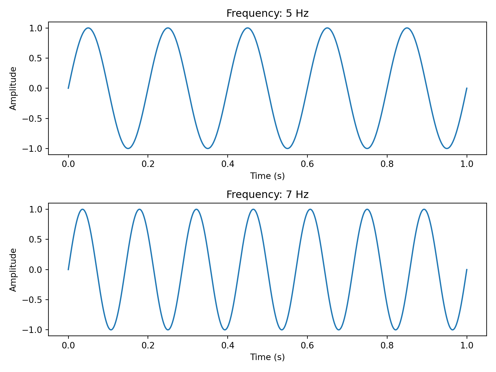
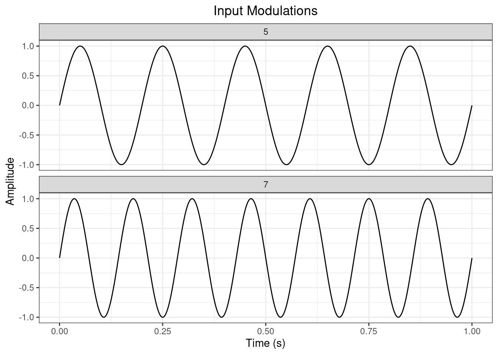
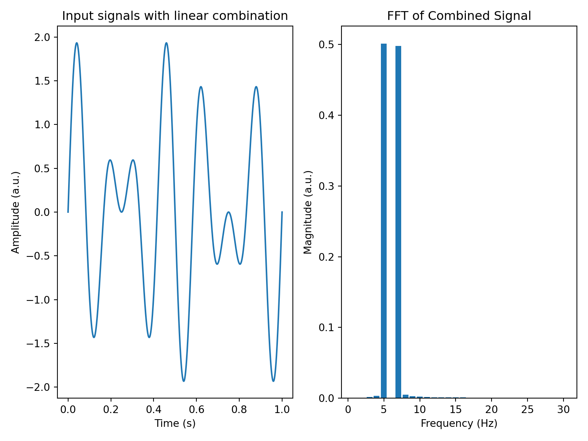

Measuring contrast processing in the visual system using SSVEP (and VEP?)
Baker, Wade: Review: Vis Neurosci
ABSTRACT:
Cone photoreceptor contrast modulations are the currency of the early visual system. Measuring the way that sensitivity to contrast depends on factors such as spatial and temporal frequency, age, eccentricity, chromaticity and the presence of other stimuli has been a focus of vision science for at least 100 years. One of the most productive experimental approaches in this field has been the use of the ‘steady-state visually-evoked potential’ (SSVEP): a technique where contrast modulating inputs are ’frequency tagged (presented at well-defined frequencies and phases) and the electrical signals that they generate in the brain are analyzed in the temporal frequency domain. SSVEPs have several advantages over conventional measures of visually-evoked responses: they have relatively unambiguous ouput measures, a high SNR and they allow us to analyze interactions between stimulus components using a convenient mathematical framework. Here we describe how SSVEPs have been used to study visual contrast over the past 70 years(Dawson 1954). Because our thinking about SSVEPs is best described in simple mathematical models, we embed code that illustrates key steps in the modelling and analysis. This document can therefore be used both as a review of the use of SSVEP in measuring human contrast processing, and as an interactive learning aid.
Figures:
1: a) A typical SSVEP setup: a screen, a grating, a flicker rate: b) The responses from a single electrode (time domain) c) Frequency domain.
import matplotlib.pyplot as pltimport numpy as npimport scipy as scpinputFrequencies_Hz=np.array([5,7]) # We simulate a system with two input frequencies (perhaps contrast-reversing gratings?)duration_S=1# All variables in this code have an _[units] where possibledigitisationRate_Hz=1000support_S=np.linspace(0,duration_S,duration_S*digitisationRate_Hz)inputModulations = np.zeros((len(support_S), len(inputFrequencies_Hz)))for i, freq inenumerate(inputFrequencies_Hz): inputModulations[:, i] = np.sin(2* np.pi * freq * support_S)# Create a figure with two subplotsfig, axs = plt.subplots(len(inputFrequencies_Hz), 1, figsize=(8, 6))# Plot each input modulation in a separate subplotfor i, freq inenumerate(inputFrequencies_Hz): axs[i].plot(support_S, inputModulations[:, i]) axs[i].set_xlabel('Time (s)') axs[i].set_ylabel('Amplitude') axs[i].set_title('Frequency: {} Hz'.format(freq))# Adjust the spacing between subplotsplt.tight_layout()plt.show()

It is relatively easy to write the same thing in R. This is a ‘machine translation’ using Anthropic’s Claude3 LLM. You need to modify your R environment to include the reticulate package (and probably some others… rmarkdown for one?)
Note that once you have this working, you can pass data back and fore between R and python!
library(ggplot2)inputFrequencies_Hz <-c(5, 7)duration_S <-1digitisationRate_Hz <-1000support_S <-seq(0, duration_S, length.out = duration_S * digitisationRate_Hz)inputModulations <-matrix(0, nrow =length(support_S), ncol =length(inputFrequencies_Hz))for (i inseq_along(inputFrequencies_Hz)) { freq <- inputFrequencies_Hz[i] inputModulations[, i] <-sin(2* pi * freq * support_S)}# Create a data frame for plottingdata <-data.frame(Time =rep(support_S, length(inputFrequencies_Hz)),Amplitude =c(inputModulations),Frequency =factor(rep(inputFrequencies_Hz, each =length(support_S))))# Create the plot using ggplot2plot <-ggplot(data, aes(x = Time, y = Amplitude)) +geom_line() +facet_wrap(~ Frequency, ncol =1) +scale_x_continuous(name ="Time (s)", limits =c(0, duration_S)) +scale_y_continuous(name ="Amplitude") +ggtitle("Input Modulations") +theme_bw() +theme(plot.title =element_text(hjust =0.5))print(plot)

The two inputs are represented here as amplitude modulations across time.
If the two inputs are simply added together, the representation of the resulting signal in the Fourier domain is just the linear sum of the two independent signals:
freqCutoff_Hz=30combinedSignal=np.sum(inputModulations,axis=1)FT_combinedSignal=np.fft.fft(combinedSignal)/len(combinedSignal)fig,axs=plt.subplots(1,2,figsize=(8,6))axs[0].plot(support_S,combinedSignal)axs[0].set_xlabel('Time (s)')axs[0].set_ylabel('Amplitude (a.u.)')axs[0].set_title('Input signals with linear combination')# Create the frequency support for the FFT plotfrequencySupport = np.arange(1,freqCutoff_Hz*duration_S+1) # We only want to plot the frequencies in the FFT up to this point# Plot the absolute values of the FFT in the second axis as a bar plotaxs[1].bar(frequencySupport, np.abs(FT_combinedSignal[frequencySupport]))axs[1].set_xlabel('Frequency (Hz)')axs[1].set_ylabel('Magnitude (a.u.)')axs[1].set_title('FFT of Combined Signal')plt.tight_layout()plt.show()

2: Sweeps and CRFs. Measurements of contrast sensitivity, extrapolating the sweep to zero response to get t’hold. Infants and adults?
3: Measurements of modulation. Figures adapted from other papers: Attention to space, attention to features, adaptation (?). masking/surround suppression\
4: Clinical (Porciatti / Tsai/ Marmite/ Amblyopia / PD?) [Porciatti et al. (2000)](Tsai et al. 2011)5: Future directions (decoding in frequency domain?, animals? BCI?)
History
1. The basics of SSVEP and contrast sensitivity including a history of both fields
SSVEP (Steady-State Visual Evoked Potential): A continuous electrical response evoked in the brain by visual stimuli flickering at a constant frequency (Regan, 1966).
Contrast Sensitivity: The ability to detect differences in luminance between an object and its background (Campbell & Green, 1965).
Regan, D. (1966). Some characteristics of average steady-state and transient responses evoked by modulated light. Electroencephalography and clinical neurophysiology, 20(3), 238-248.
Campbell, F. W., & Green, D. G. (1965). Optical and retinal factors affecting visual resolution. J Physiology, 181, 576-593.
Check Regan paper for earlier (e.g. EEG refs). Norcia review will be helpful!
(From Tyler / Levi / Apkarian paper):
6. Regan, D.: Rapid methods for refracting the eye and assessing the visual acuity in amblyopia using steady-state visual evoked potentials. In Desmedt, J.E., editor: Visual Evoked Potentials in Man: New Developments, Oxford, 1977, Clarendon Press, pp. 418-426.
7. Fricker, S.J.: Narrow-band filter techniques for the detection and measurement of evoked responses, Electroencephalogr. Clin. Neurophysiol. 14:411, 1962.
8. Van der Tweel, L. H., Sem-Jacobsen, C.W., Kamp, A., Van Leeuwen, W.S., and Verings, F.T.H.: Objective determination of response to modulated light, Acta Physiol. Pharmacol. Neerl. 7:528, 1958.
9. Regan, D.: Latencies of evoked potentials to flicker and to pattern speedily estimated by simultaneous stimulation method, Electroencephalogr. Clin. Neurophysiol. 40:654, 1976.
10. Tyler, C.W., Apkarian, P., and Nakayama, K.: Multiple spatial frequency tuning of electrical responses from the human.…
[Around here perhaps a section about what gain control is, mentioning other methods as well including psychophysics, MRI, electrophysiology, and other EEG markers including ERPs and evoked gamma band oscillations. Maybe outline the Heeger gain control model and its cousins.]
[Sure. But in fact gain control is only a small part of this story - especially in the early days. They were, I think, more interested in using SSVEP to measure absolute contrast sensitivity and to get lower bounds on things like infant visual development. Gain control might be better as a separate section later.]
2. Spatial, temporal frequency and contrast sensitivity measurements
Basically using SSVEP to measure a cortical output amplitude for any given input contrast. You can vary parameters like SF, TF, position, color and of course contrast. Early on people realised that you can ‘sweep’ the stimulus to get a CRF. You broadly get a line in log contrast space if you do that (Tyler) - then you can extrapolate that line down to zero response to estimate the threshold. That doesn’t >quite< work but it’s pretty close.
You can also use this for ‘difficult’ populations like babies. One interesting story was about how SSVEP become a replacement for preferential looking (which was the other way of looking at infant visual development). See e.g. Davida Teller. SSVEPs allowed people to make objective measurements of contrast sensitivity development and deduce that the visual system was more mature (e.g. more functional) in infancy than previously expected. Also measures of colour sensitivity. Tinyeyes is based off those measurements. Other people: Tyler, Norcia, Gunilla H-P, many of the people at SKERI in the 1980s and 90s. Norcia 86,88,90 - mentioned in Regan’s nice autobiography : https://www.google.co.uk/books/edition/Seeing_Spatial_Form/HqaKlR_GpP0C?hl=en&gbpv=1&dq=Analysis+of+EEG+responses+in+man,+evoked+by+sine+watre+modulated+light.+Thesis&pg=PA215&printsec=frontcover
In parallel of course, people were using frequency tagging to do single unit work - the 1F vs 2F simple/complex cell classification scheme was all about this (Lennie and others).
3. SSVEP in functional localization
Techniques like fMRI have been combined with SSVEP to achieve more precise spatial localization (Di Russo et al., 2007). See however the Ales cruciform paper.
Di Russo, F., Pitzalis, S., Spitoni, G., Aprile, T., Patria, F., Stella, A., ... & Hillyard, S. A. (2007). Identification of the neural sources of the pattern-reversal VEP. Neuroimage, 34(1), 177-189.
Ales and Norcia:... (showed that people’s intuition about V1 upper / lower v.f reversing polarity wasn’t really correct). This feels a little outside our scope though... We have also combined SSVEP with source imaging techniques to probe responses in different cortical locations (again, Ales papers, some early stuff from Stan K? Appelbaum, Wade, Norcia figure/ground...) and then a host of later work from that lab and others.
4. SSVEP and contrast gain control including adaptation, masking, and attention
[The story goes: Up to the lte 90s people were primarily interested in measuring contrast sensitivity - the shape of the response function was assumed to be basically log-linear - and they fit it with straight lines to extrapolate back to zero response. But then (once Heeger’s 1992 paper had sunk in - see also stuff like Shapley and Victor 1981 (Shapley & Victor, 1981)), people started thinking about gain control - Candy and Norcia in about 1999, Porciatti, probably a load of Tyler papers that I don’t even know about...]. Probably look in p
And then people worked out that if you can use SSVEP to measure contrast responses, you can also use it to measure things that modulate contrast responses. These include adaptation, masking, suppression, attention (feature and space), clinical things.
Adaptation:
Continuous exposure to high-contrast patterns reduces contrast sensitivity, which can be measured using SSVEP (Ross et al., 1989). Others? Baker recent gain control paper is perhaps worth mentioning here as a ‘confound’ of sorts. Engel 2018 (Vergeer et al., 2018). This paper is interesting (Rideaux et al., 2023) and >sort< of SSVEP.
Masking:
High contrast masks can suppress the visibility of low contrast patterns, which has implications in SSVEP amplitude (Haynes et al., 2003).
Attention: Directing attention can enhance contrast sensitivity, as shown in studies using SSVEP (Müller et al., 2006). Also Tsai (dynamics), Baker / Wade (several), Winawer? I think JW has a nice dynamic model of normalization with some MEG data. Busse et al cat/human comparison. Candy and Norcia 2001 JNS (Candy et al., 2001)
Ross, J., Speed, H. D., & Morgan, M. J. (1989). The effects of adaptation and masking on incremental thresholds for contrast. Vision research, 29(2), 205-215.
Haynes, J. D., Roth, G., Stadler, M., & Heinze, H. J. (2003). Neuromagnetic correlates of perceived contrast in primary visual cortex. Journal of Neurophysiology, 89(6), 2655-2666.
Müller, M. M., Picton, T. W., Valdes-Sosa, P., Riera, J., Teder-Sälejärvi, W. A., & Hillyard, S. A. (2006). Effects of spatial selective attention on the steady-state visual evoked potential in the 20–28 Hz range. Cognitive Brain Research, 24(1), 1-13.
5. Clinical implications
Clinical applications (this is a whole section)
Not sure exactly how SSVEP used in clinic. mfVEP?
, e.g., in monitoring visual impairments, tracking neuronal diseases, or neurofeedback (Norcia et al., 2015).
Norcia, A. M., Appelbaum, L. G., Ales, J. M., Cottereau, B. R., & Rossion, B. (2015). The steady-state visual evoked potential in vision research: A review. Journal of vision, 15(6), 4-4.
Animal work: Flies (Eliott, West, Himmelberg, Ales, Norcia): Mice/rats (probably many - can’t think off the top of my head - we were working with a mouse EEG person at UCSF about 12 years ago...), Monkeys (Kiorpes?),
6. Future directions
Use as a readout of modulations. TMS? FUS? Marmite B12 / Fluoxetine / amblyopia in Rats,
GABA Huang
There is a lot of SSVEP interest these days because of BCIs. I think it’s pretty weak but there is >so much< of it that it might be worth mentioning...
Advanced signal processing techniques and machine learning can be integrated to improve SSVEP-based systems (Zhu et al., 2010).
Exploring new clinical and diagnostic applications, understanding neurological diseases, and developing novel therapeutic interventions.
Citation:
Zhu, D., Bieger, J., Molina, G. G., & Aarts, R. M. (2010). A survey of stimulation methods used in SSVEP-based BCIs. Computational intelligence and neuroscience, 2010.
References
Dawson, G. D. 1954. “A Summation Technique for the Detection of Small Evoked Potentials.”Electroencephalography and Clinical Neurophysiology 6 (January): 65–84. https://doi.org/10.1016/0013-4694(54)90007-3.
Porciatti, V., P. Bonanni, A. Fiorentini, and R. Guerrini. 2000. “Lack of Cortical Contrast Gain Control in Human Photosensitive Epilepsy.”Nature Neuroscience 3 (3): 259–63. https://doi.org/10.1038/72972.
Tsai, Jeffrey J., Anthony M. Norcia, Justin M. Ales, and Alex R. Wade. 2011. “Contrast Gain Control Abnormalities in Idiopathic Generalized Epilepsy.”Annals of Neurology 70 (4): 574–82. https://doi.org/10.1002/ana.22462.